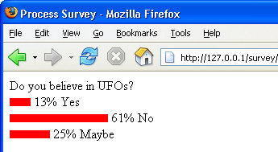

View the Survey Results
This lesson is part of an ongoing Survey/Poll tutorial. The first part is here: Build your own Survey/Poll, along with all the files you need.
On the survey.php page, there is a button that can be clicked to View the Results. If this button is clicked, the user will see something like this:

The red line represents how many people voted for a particular option. After that, we have the number as a percentage, and what the option was.
On the previous page, survey.php, The HTML form was this:
<FORM NAME ="form2" METHOD ="GET" ACTION ="viewResults.php">
<INPUT TYPE = "Submit" Name = "Submit2"
VALUE = "View results">
<INPUT TYPE = "Hidden" Name = "h1" VALUE = <?PHP print
$qID; ?>>
</FORM>
The value in the variable $qID(part of the Hidden HTML form element)
is coming from the PHP code you saw earlier. This is the QID field that is in
both the questions and answers tables in our database. We need to pass this
QID number over to the viewResults.php page so that the correct results
can be displayed.
If you open up the code for viewResults.php page (in the survey folder), you'll see there's quite a lot there! But most of the code is taken up with manipulating the red.jpg graphic! We're just stretching a red line, depending on how many votes were cast for an option. The rest of the code pulls the data from the table, and puts values into variables. We'll keep the two separate, for explanation purposes.
How many people voted for a particular option?
To see how many people voted for A, B or C, we first have to get that value from the viewResults.php page.
if (isset($_GET['Submit2'])) {
$qNum = $_GET['h1'];
}
First, we check to see if the Submit button was clicked on the previous page. If it was then we can GET the hidden value:
$qNum = $_GET['h1'];
The Hidden form element had the NAME "h1". It's this NAME that goes between the square brackets of $_GET. The VALUE of the h1 hidden element is coming from the $qID variable. This will be the QID field in the database tables tblQuestions and answers. We can use this value to pull records from the tables, which the next two lines do:
$SQL = "SELECT * FROM tblquestions, answers WHERE tblquestions.QID = answers.QID AND answers.QID = '$qNum'";
$result = mysql_query($SQL);
Here, we're selecting all the records from two tables:
SELECT * FROM tblquestions, answers
But we need a WHERE part. The WHERE clause is quite tricky:
WHERE tblquestions.QID = answers.QID AND answers.QID = '$qNum'
To match the two QID fields, we have this:
tblquestions.QID = answers.QID
The name of the table goes first, followed by a dot. After the dot, we've typed the QID field. This is present in both tables.
But we only need the records where the QID field matches the qNum that was handed over from the previous page:
AND answers.QID = '$qNum'
We're saying "Only bring back the records where the two QID fields match AND where the QID value in the answers table is equal to the value in the variable called $qNum". A bit more complex, but go over it a few times and it will make sense. Hopefully!
After the SQL has been run, we put the results into an array:
$db_field = mysql_fetch_assoc($result);
$question = $db_field['Question'];
$answerA = $db_field['A'];
$answerB = $db_field['B'];
$answerC = $db_field['C'];
$qA = $db_field['qA'];
$qB = $db_field['qB'];
$qC = $db_field['qC'];
If you look at the values in the square brackets, you'll see that they are the field names from both tables. We're getting the value for the Question, the answers A, B and C, as well as the original options for each questions (qA, qB and qC). All of these values are then placed into variables, ready for displaying on the page.
We could just print the values to the page, like this:
print $question;
print $answerA;
print $answerB;
print $answerC;
But that's not very interesting for the viewer. Better is some form of graphic, like the one at the top of this page. This is what you'll see when you click the button to View the Results. Here's how it works.
Display a graphic for the results
At the top of the code, you'll notice some variables are set up:
$imgTagA = '';
$imgWidthA = '0';
$imgTagB = '';
$imgWidthB = '0';
$imgTagC = '';
$imgWidthC = '0';
$imgHeight = '10';
$totalP = '';
$percentA = '0';
$percentB = '0';
$percentC = '0';
What we're going to do here is to manipulate the HTML IMG tag. This tag is used to display an image, and ordinarily would look something line this:
<IMG SRC = 'red.jpg' HEIGHT = '10' WIDTH = '100'>
The part we want to manipulate with our PHP code is the WIDTH value. Instead of setting it to a fixed value, we can set it to a value from the answers table.
In the answers table, the columns for A, B and C hold how many people voted for a particular option. We have three separate IMG tags in our code, one for each of the columns. If, for example, A held a value of 45 (meaning 45 people voted for this option), we can make the WIDTH of the red line image 45 pixels.
Except, 45 pixels is not very wide. Much better to turn them all in to percentages. Which is what the following code does:
$totalP = $answerA + $answerB + $answerC;
$percentA = (($answerA * 100) / $totalP);
$percentA = floor($percentA);
$percentB = (($answerB * 100) / $totalP);
$percentB = floor($percentB);
$percentC = (($answerC * 100) / $totalP);
$percentC = floor($percentC);
$imgWidthA = $percentA * 2;
$imgWidthB = $percentB * 2;
$imgWidthC = $percentC * 2;
First you need to total up how many people voted:
$totalP = $answerA + $answerB + $answerC;
Next, you can multiply A, B and C by 100 and then divide by the total:
$percentA = (($answerA * 100) / $totalP);
Because this would give an answer like 24.567, we can use the inbuilt Math function floor to strip the "point something" at the end:
$percentA = floor($percentA);
Finally, you can multiply by, say, 2 to give the red line some extra width:
$imgWidthA = $percentA * 2;
The values in $imgWidthA, $imgWidthB and $imgWidthC can then be used to build an IMG tag:
$imgTagA = "<IMG SRC = 'red.jpg' Height = " . $imgHeight . " WIDTH = " . $imgWidthA . ">";
To display this on the page, we use the following:
print $imgTagA . " " . $percentA . "% " . $qA . "<BR>";
So the red line gets displayed first, followed by the percentage of people who voted for this option. A percent sign and the option itself complete the line.
And that completes the survey walkthrough. Feel free to adapt and amend the code you downloaded. But don't forget to make a backup of the original files!
Next, we'll take a look at how to build your own online Forum.